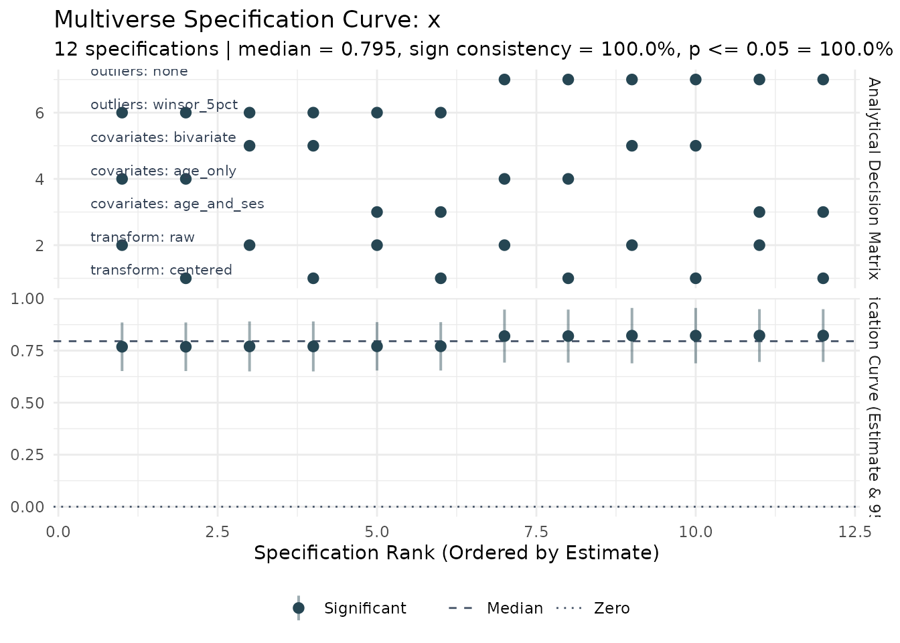
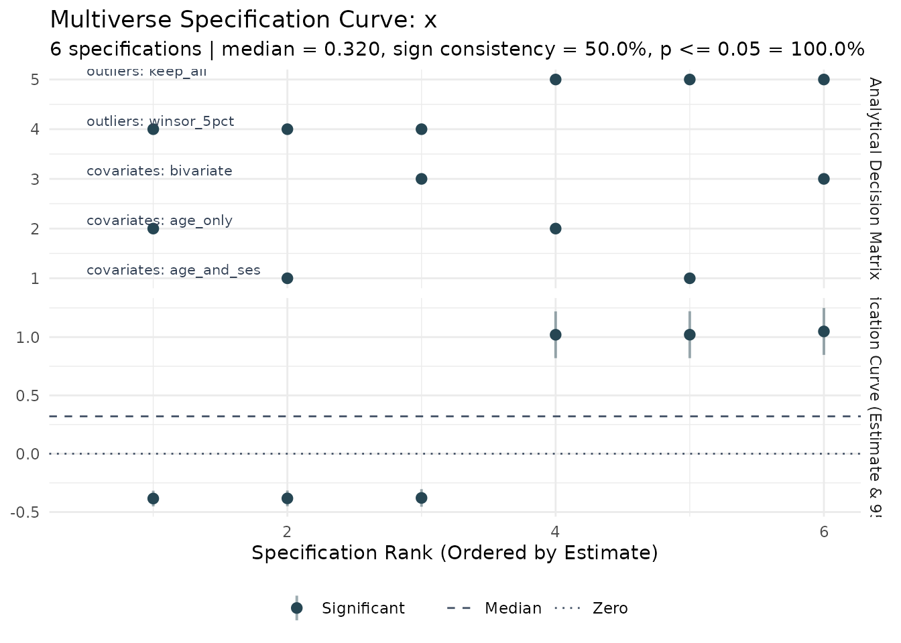

Multiverse Specification Curves, Incremental PR Diff Linting & New AST Rules
Source:vignettes/multiverse-and-pr-diffs.Rmd
multiverse-and-pr-diffs.RmdReal-world statistical repositories face two recurring engineering challenges:
- Analytical fragility (“garden of forking paths”): A focal effect may depend heavily on seemingly arbitrary researcher degrees of freedom—outlier trimming rules, covariate sets, missing-data handling, or predictor transformations.
- Legacy repository adoption: Adding a strict 20-rule statistical linter to a multi-year research repository can flood pull requests with hundreds of untouched legacy findings unless linting is scoped incrementally to changed lines.
This vignette demonstrates how statci solves both
problems with audit_multiverse(),
stat_lint_diff(), and its 20 built-in AST statistical lint
rules.
1. Multiverse Specification-Curve Auditing
(audit_multiverse())
audit_multiverse() evaluates a user-supplied modeling
pipeline across the full Cartesian grid of analytical decision forks,
returning specification-level estimates, confidence intervals, p-values,
sign consistency, median and interquartile range (IQR), and a per-fork
variance decomposition (eta_squared) that pinpoints which
decision fork drives estimate dispersion.
A Robust Multiverse
First, simulate a clean dataset where x has a strong,
genuine linear relationship with y regardless of reasonable
analytical choices:
set.seed(2026)
n <- 120L
study_df <- data.frame(
x = rnorm(n),
age = rnorm(n),
ses = rnorm(n)
)
study_df$y <- 1.5 + 0.85 * study_df$x + 0.25 * study_df$age - 0.15 * study_df$ses + rnorm(n, sd = 0.6)
decisions <- list(
outliers = c("none", "winsor_5pct"),
covariates = c("bivariate", "age_only", "age_and_ses"),
transform = c("raw", "centered")
)
fit_spec <- function(d, spec) {
if (spec$outliers == "winsor_5pct") {
qs <- stats::quantile(d$y, c(0.05, 0.95))
d$y <- pmin(pmax(d$y, qs[1L]), qs[2L])
}
if (spec$transform == "centered") {
d$x <- d$x - mean(d$x)
}
fml <- switch(
spec$covariates,
bivariate = y ~ x,
age_only = y ~ x + age,
age_and_ses = y ~ x + age + ses
)
stats::lm(fml, data = d)
}
mv_robust <- audit_multiverse(
data = study_df,
decisions = decisions,
fit_fn = fit_spec,
param = "x"
)
summary(mv_robust)
#> [PASS] statci Multiverse Specification Curve (x: 12/12 valid specs)
#> median = 0.7953, IQR = 0.0518 [min = 0.7686, max = 0.8224]
#> sign consistency = 100.0%, p <= 0.05 = 100.0%, top driver = outliers
#> Decision Fork Variance Decomposition:
#> - outliers (2 levels): median range = 0.0518, eta^2 = 99.8%
#> - covariates (3 levels): median range = 0.0023, eta^2 = 0.2%
#> - transform (2 levels): median range = 0.0000, eta^2 = 0.0%Every specification agrees on direction
(sign_consistency = 100%) and statistical significance
(p <= 0.05 across all 12 specifications), with tight IQR
dispersion. We can visualize the sorted specification curve and its
underlying decision matrix directly via plot():
plot(mv_robust)
Catching Analytical Fragility and Pinpointing Its Driver
Now introduce a single extreme leverage outlier into a dataset whose true underlying slope is negative. Without winsorization, OLS flips sign; with 5% winsorization, the true negative slope is recovered:
fragile_df <- study_df
fragile_df$y <- -0.40 * fragile_df$x + 0.20 * fragile_df$age + rnorm(n, sd = 0.35)
fragile_df$x[1L] <- 15
fragile_df$y[1L] <- 28
mv_fragile <- audit_multiverse(
data = fragile_df,
decisions = list(
outliers = c("keep_all", "winsor_5pct"),
covariates = c("bivariate", "age_only", "age_and_ses")
),
fit_fn = function(d, spec) {
if (spec$outliers == "winsor_5pct") {
qx <- stats::quantile(d$x, c(0.05, 0.95))
qy <- stats::quantile(d$y, c(0.05, 0.95))
d$x <- pmin(pmax(d$x, qx[1L]), qx[2L])
d$y <- pmin(pmax(d$y, qy[1L]), qy[2L])
}
fml <- switch(
spec$covariates,
bivariate = y ~ x,
age_only = y ~ x + age,
age_and_ses = y ~ x + age + ses
)
stats::lm(fml, data = d)
},
param = "x"
)
summary(mv_fragile)
#> [FAIL] statci Multiverse Specification Curve (x: 6/6 valid specs)
#> median = 0.3203, IQR = 1.4025 [min = -0.3843, max = 1.0486]
#> sign consistency = 50.0%, p <= 0.05 = 100.0%, top driver = outliers
#> Decision Fork Variance Decomposition:
#> - outliers (2 levels): median range = 1.4036, eta^2 = 100.0%
#> - covariates (3 levels): median range = 0.0169, eta^2 = 0.0%audit_multiverse() automatically flags
status = "fail", reports
sign_consistency = 50%, and ranks outliers as
the top variance driver (eta_squared near 100%).
plot(mv_fragile)
You can also extract the full specification table with
as_tibble() and embed multiverse = mv_robust
directly into statci_report() alongside lint, calibration,
manuscript, and sensitivity checks:
head(as_tibble(mv_robust)[, c("spec_id", "outliers", "covariates", "estimate", "p_value", "significant")])
#> # A tibble: 6 × 6
#> spec_id outliers covariates estimate p_value significant
#> <int> <chr> <chr> <dbl> <dbl> <lgl>
#> 1 4 winsor_5pct age_only 0.769 1.48e-24 TRUE
#> 2 10 winsor_5pct age_only 0.769 1.48e-24 TRUE
#> 3 2 winsor_5pct bivariate 0.770 7.72e-24 TRUE
#> 4 8 winsor_5pct bivariate 0.770 7.72e-24 TRUE
#> 5 6 winsor_5pct age_and_ses 0.771 1.13e-24 TRUE
#> 6 12 winsor_5pct age_and_ses 0.771 1.13e-24 TRUE
rep <- statci_report(multiverse = mv_robust, title = "Multiverse Verification Audit")
rep
#> [PASS] Multiverse Verification Audit
#> [PASS] Multiverse Specification Curve: 12/12 specs; median = 0.795, IQR =
#> 0.052, sign consistency = 100.0%2. Incremental Git-Diff Pull Request Linting
(stat_lint_diff())
When onboarding statci onto an existing repository with
untouched legacy scripts, stat_lint_diff() runs full-file
AST analysis on each modified .R, .qmd, or
.Rmd file (so cross-line context like an earlier
set.seed() is preserved) and reports only findings
that land on added or modified lines.
Offline Usage with diff_text
In CI pipelines or air-gapped environments, you can pass a unified
diff string directly via diff_text:
tmp_dir <- tempfile("statci_vignette_diff_")
dir.create(tmp_dir)
legacy_path <- file.path(tmp_dir, "legacy-pipeline.R")
writeLines(c(
"legacy_draw <- rnorm(100)", # Line 1: legacy unseeded call (untouched)
"set.seed(2026)", # Line 2: seed for new work
"fresh_draw <- rnorm(50)", # Line 3: safe (seeded above)
"bad_flag <- mean(fresh_draw) == 0.5" # Line 4: newly added float equality
), legacy_path)
pr_diff <- paste(
"--- a/legacy-pipeline.R",
"+++ b/legacy-pipeline.R",
"@@ -2,0 +3,2 @@",
"+fresh_draw <- rnorm(50)",
"+bad_flag <- mean(fresh_draw) == 0.5",
sep = "\n"
)
diff_res <- stat_lint_diff(path = tmp_dir, diff_text = pr_diff)
diff_res
#> [WARN] statci lint: 1 file(s), 20 rule(s) | 0 error(s), 1 warning(s), 0 info
#> WARN legacy-pipeline.R:4:13 (equality_on_float): Exact floating-point
#> comparison (`==`) on `mean(fresh_draw)==0.5`. Use `isTRUE(all.equal(...))` or
#> `abs(a - b) < tol` instead.
diff_res$diff_meta$n_suppressed_untouched
#> [1] 1Notice two crucial properties:
- Line 1 (
legacy_draw <- rnorm(100)) was untouched by the PR, so it is suppressed (n_suppressed_untouched = 1) rather than blocking the PR. - Line 3 (
fresh_draw <- rnorm(50)) is NOT falsely flagged as unseeded becausestat_lint_diff()parses the full file AST and seesset.seed(2026)on line 2. - Line 4 (
bad_flag <- mean(fresh_draw) == 0.5) is caught asequality_on_float.
Running Against a Git Repository (base_ref,
head_ref, staged)
When diff_text = NULL, stat_lint_diff()
invokes read-only git diff after strictly validating
base_ref/head_ref against option injection and
confining all diff paths inside path:
# Working-tree changes against HEAD
stat_lint_diff(path = ".", base_ref = "HEAD")
# Staged changes prior to commit
stat_lint_diff(path = ".", staged = TRUE)
# Pull-request diff between base branch and HEAD in GitHub Actions
stat_lint_diff(path = ".", base_ref = "origin/main", head_ref = "HEAD")3. Silent Data-Integrity AST Rules (20 Built-In Rules)
statci ships 20 built-in AST lint
rules. Three high-impact data-integrity rules catch silent
statistical bugs that never raise R errors:
-
unverified_merge_cardinality: Flagsdplyr::left_join(),inner_join(),full_join(),right_join(), and basemerge()calls that neither declarerelationship = ...nor verifynrow()before/after joining, protecting against silent many-to-many row duplication that inflates sample sizes and shrinks standard errors. -
missing_drop_false_matrix: Flags 2D matrix/array subsetting such asX[, cols]orX[idx, ]lackingdrop = FALSE, which silently collapses 1-row or 1-column subsets to atomic vectors and breaks downstream matrix algebra (%*%,solve(),crossprod()). -
implicit_na_rm_masking: Flags unconditionalna.rm = TRUEinside statistical summaries (mean(),sd(),var(),sum(),median(),quantile(),min(),max()) without any nearby missingness inspection (is.na(),anyNA(),complete.cases(),na.omit(),drop_na()).
subtle_code <- '
set.seed(2026)
joined <- merge(patients, visits, by = "id")
X_sub <- design_mat[, selected_cols]
avg_score <- mean(joined$score, na.rm = TRUE)
'
stat_lint_text(
subtle_code,
rules = c(
"unverified_merge_cardinality",
"missing_drop_false_matrix",
"implicit_na_rm_masking"
)
)
#> [WARN] statci lint: 1 file(s), 3 rule(s) | 0 error(s), 2 warning(s), 0 info
#> WARN <text:r>:3:11 (unverified_merge_cardinality): `merge()` called without
#> `relationship =` or a post-merge row-count assertion (`nrow()` /
#> `stopifnot()`); unintended duplicate keys can silently multiply rows.
#> WARN <text:r>:5:14 (implicit_na_rm_masking): `mean(..., na.rm = TRUE)` silently
#> discards missing values with no `is.na()` / `anyNA()` / `complete.cases()`
#> missingness check or report in scope.Once you explicitly guard join cardinality, preserve matrix
dimensions with drop = FALSE, and audit missingness before
summarizing, all 20 built-in rules pass cleanly:
guarded_code <- '
set.seed(2026)
n_before <- nrow(patients)
joined <- merge(patients, visits, by = "id")
stopifnot(identical(nrow(joined), n_before))
X_sub <- design_mat[, selected_cols, drop = FALSE]
n_missing <- sum(is.na(joined$score))
avg_score <- mean(joined$score, na.rm = TRUE)
'
stat_lint_text(guarded_code)
#> [PASS] statci lint: 1 file(s), 20 rule(s) | 0 error(s), 0 warning(s), 0 info